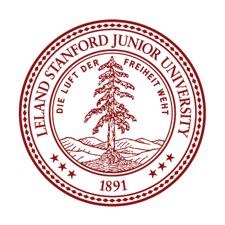

|
Zhenze Mo Hi, my name is Zhenze Mo (莫镇泽). I study the relationship between human cognition and machine intelligence, using computational methods to understand human behavior and to design more interpretable and adaptive AI systems. I am a Master’s student at the Khoury College of Computer Sciences, Northeastern University. |

|
Publications (* equal contribution) |
|
SUITE: Scaling Up Individualized Theory-of-Mind Evaluation in Large Language Models
Zhenze Mo*, Chance Jiajie Li*, Ao Qu, Yuhan Tang, Luis Alberto Alonso Pastor, Kent Larson, Jinhua Zhao ToM4AI Workshop @ AAAI, 2026 (Spotlight). |
|
HugAgent: Benchmarking LLMs for Simulation of Individualized Human Reasoning
Chance Jiajie Li*, Zhenze Mo*, Yuhan Tang*, Ao Qu, Jiayi Wu, Kaiya Ivy Zhao, Yulu Gan, Jie Fan, Jiangbo Yu, Hang Jiang, Paul Pu Liang, Jinhua Zhao, Luis Alberto Alonso Pastor, Kent Larson EMNLP, 2026 (Main Conference). PersonaLLM Workshop @ NeurIPS, 2025 (Oral). Language, Agent, and World Models Workshop @ NeurIPS, 2025 (Spotlight). |
|
Simulating Society Requires Simulating Thought
Chance Jiajie Li*, Jiayi Wu*, Zhenze Mo, Ao Qu, Yuhan Tang, Kaiya Ivy Zhao, Yulu Gan, Jie Fan, Jiangbo Yu, Jinhua Zhao, Paul Liang, Luis Alonso, Kent Larson NeurIPS, 2025 Position Track (5.7%). |
Experience |
|
MIT JTL
Research Intern Mentor: Qu Ao, Chance Jiajie Li Boston, USA 06/2025 - 10/2025 |
|
|
MIT-Tongji City Science Lab
Software Engineer Boston, USA 10/2023 - 10/2024 |
Teaching |

|
Khoury College of Computer Sciences
Teaching Assistant for CS7150 - Deep Learning (Advisor: Lorenzo Torresani), Spring 2026 Teaching Assistant for CS7150 - Deep Learning (Advisor: Steve Schmidt), Fall 2025 Teaching Assistant for CS5180 - Reinforcement Learning (Advisor: Robert Platt), Spring 2025 |
|
 |
Stanford University - Code in Place
Section Leader for CS106A 04/2024 – 06/2024 |
Academic Service & Talk |
| Invited Speaker, "Toward Reasoning-Faithful Human Simulation: Modeling human reasoning beyond behavior imitation" (Lightning Talk), Khoury College PhD Open House, Northeastern University, March 2026. |
| Conference Reviewer: Conference on Language Modeling (COLM 2026); Industry Track, Association for Computational Linguistics (ACL 2026). |
| Workshop Reviewer: Social Simulation with LLMs @ COLM 2026; Trustworthy AI for Good Workshop @ ICML 2026; Technical AI Governance Research Workshop @ ICML 2026; Language, Agent, and World Models (LAW) Workshop @ NeurIPS 2025. |
Miscellaneous |
|
PADI Advanced Open Water & Enriched Air Nitrox Certified Diver.
Passionate soccer player and former undergraduate college team captain. |
|
Website is inspired and created based on this. |